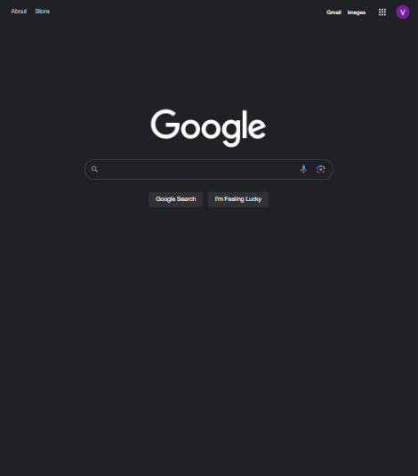

Hick's Law
Google Search
google.com
The Google search website demonstrates the design principle of Hick's Law with a large prominent search bar and button on a page that contains as few additional distracting elements as possible, minimizing the time a user needs to find and click on the item or button relevant to their intent.
Whitespace and Clean Design
Apple
apple.com
The Apple website is renowned for it's minimalist design that makes excellent use of white space to provide a website that is clean, easy to navigate, and well structured. This website demonstrates very well the use of white space to both accentuate and create a visual division between certain elements.
Contrast
Stripe
stripe.com
The Stripe website is a great demonstration of the use of contrast in the way it transitions from a darker colored back ground with darker text to a lighter back ground with boldly dark text using colors that do not lose the clarity of the text in the changeover.